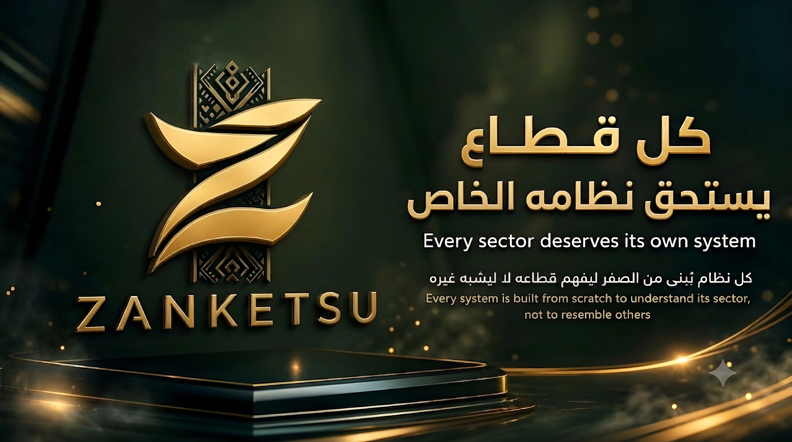

هناك سؤال يستحق أن يُطرح بصراحة قبل أي حديث عن التكنولوجيا في اليمن: كيف يمكن لبلد يستخدم فيه أقل من خُمس السكان الإنترنت أن يفكر أصلاً في بناء أنظمة رقمية متقدمة؟ الإجابة تبدأ من فهم حجم الفجوة الحقيقية التي تفصل اليمن عن محيطه العربي والعالم، فجوة لا تُقاس بالتفاؤل أو التمني، بل بأرقام صريحة تكشف حجم التحدي الفعلي.
اليمن اليوم يسجل معدل انتشار إنترنت لا يتجاوز نحو 17.7% من إجمالي السكان، ما يعني أن أكثر من 82% من اليمنيين لا يستخدمون الإنترنت أصلاً. هذا الرقم وحده يضع اليمن في مرتبة متأخرة جداً مقارنة بدول الخليج العربي التي تتصدر معدلات الانتشار الرقمي في المنطقة.
هذه الآلام ليست تفاصيل هامشية، بل هي السياق الذي وُلدت فيه فكرة زانكيتسو من الأساس. أي شركة تقنية تحاول العمل في اليمن اليوم تواجه سؤالاً جوهرياً: هل تبني منتجاً واحداً بسيطاً يحل مشكلة محددة، أم تبني رؤية أوسع تدرك أن مشاكل اليمن مترابطة ببعضها ولا يمكن حلها بحلول منعزلة؟

الفكرة من وراء هذا الترابط أن قطاعات الحياة الاقتصادية والاجتماعية في اليمن لا تعمل بمعزل عن بعضها. مركز رياضي يحتاج نظاماً إدارياً يحتاج بدوره لنظام دفع موثوق يحتاج بدوره لبنية مالية سيادية لا تنهار عند أول أزمة سياسية. حين تُبنى هذه الأنظمة بمعزل عن بعضها من شركات مختلفة لا تتفاهم فيما بينها، تتكرر نفس مشكلة التشتت.
بناء نظام بيئي متكامل يعني أن كل حل جديد يُصمم وهو يأخذ في الحسبان بقية الأنظمة. حين يسجل صاحب عمل دخوله إلى منصة زانكيتسو، يكون له حساب واحد موحد يمثل هويته على مستوى المنصة ككل، لا حسابات متفرقة يحتاج تذكرها وإدارتها كل على حدة.
الرؤية نحو 2030 لا تقوم على وعود مبالغ فيها بأن اليمن سيلحق بمستوى دول الخليج أو أوروبا خلال سنوات قليلة. لكنها تقوم على فكرة أكثر واقعية وقابلية للتحقيق: أن يمتلك اليمن رغم كل هذه الظروف بنية تحتية رقمية محلية صلبة في القطاعات الأساسية لا تنتظر استقرار الأوضاع السياسية لتعمل، بل تُبنى من الأساس لتصمد وتستمر رغم استمرار هذه الظروف الصعبة.
تواصل ومتابعة ZANKETSU
اختر المنصة أو قناة التواصل التي ترغب بزيارتها